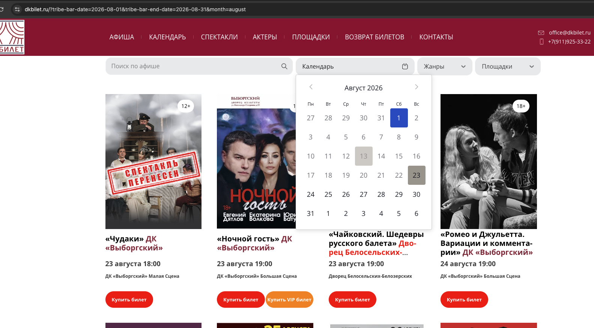
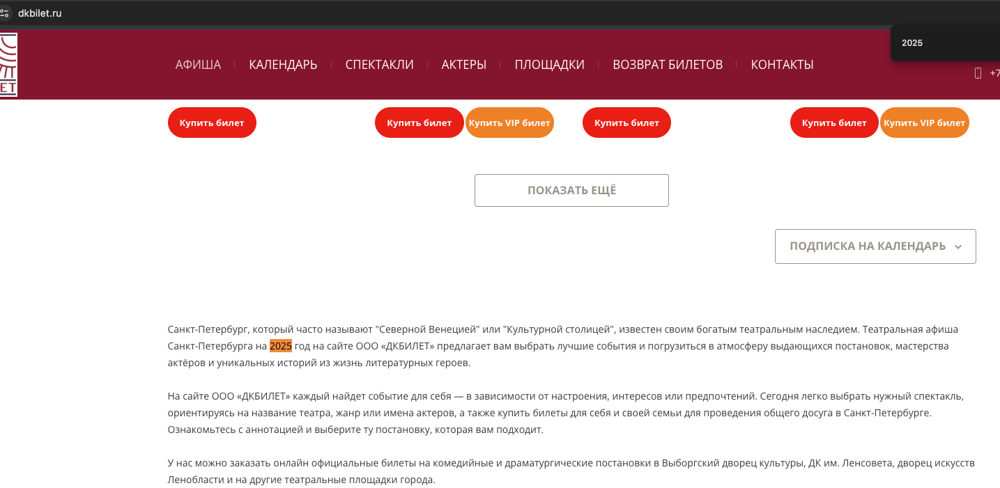
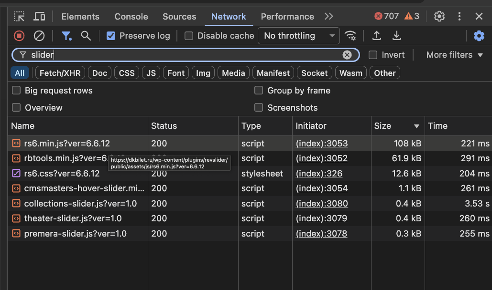
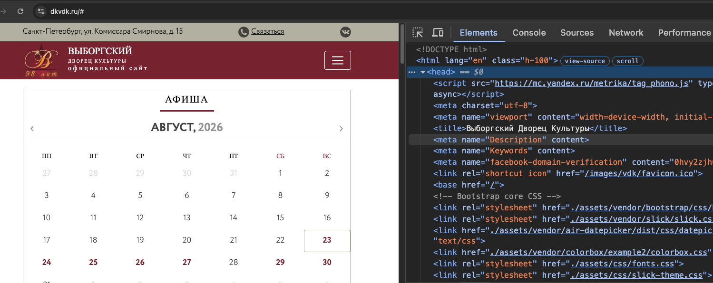
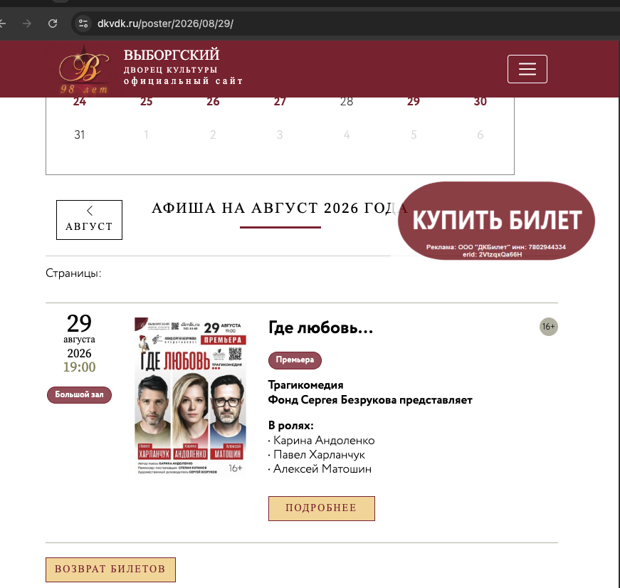
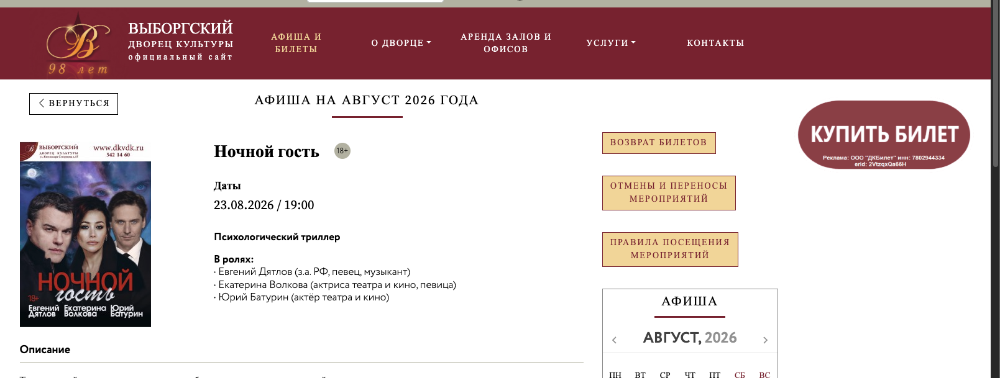
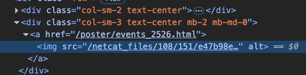
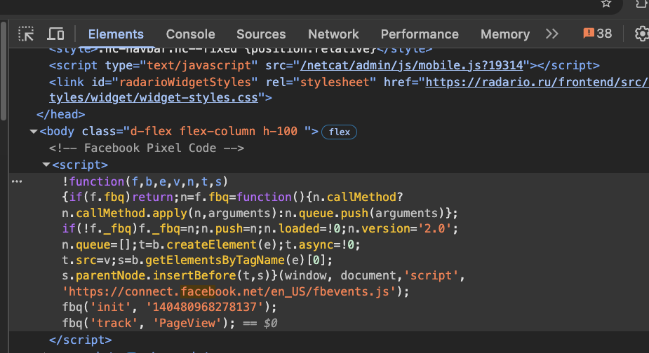

Проверка сделана по предоставленным скриншотам и ручным наблюдениям. Ниже отдельно отмечено, какие пункты подтверждены, какие не воспроизводятся, а где нужна конкретизация.
Дата фиксации: 23 августа 2026. Проверяемые сайты: dkbilet.ru, dkvdk.ru.
7подтверждено
2частично подтверждено
5не подтверждено
1нужно уточнить
Пункты проверки
1. Старые карточки спектаклей за январь-март 2026
не подтверждено
Исходная формулировка: «Проверили 5 карточек спектаклей, которые уже прошли (январь-март 2026)».
Как проверяли
Через календарь и изменение дат в адресной строке старые мероприятия найти не удалось. Пример проверочного URL: dkbilet.ru с датами 2026 и 2025.
Вывод
Пункт лучше не оставлять как подтвержденный без ссылок на конкретные 5 карточек. Сейчас не видно, какие именно прошедшие мероприятия проверялись и как на них попасть.
2. Перенесенные спектакли и отображение по датам
частично подтверждено
Исходная мысль: перенесенные спектакли могут путать зрителя.
Проверка
Отображение на исходную и новую дату есть. Это видно на афише августа: карточка с пометкой «Спектакль перенесен» присутствует в списке.
Вывод
Скрывать событие с первоначальной даты было бы нелогично: если пользователь купил билет на октябрь, а событие перенесли на ноябрь, он все равно будет искать его в октябре. Корректнее показывать карточку и на старой, и на новой дате, но явно подписывать перенос и новую дату.

Скриншот 01: карточка перенесенного спектакля отображается в афише.
3. Текст «Театральная афиша Санкт-Петербурга на 2025 год» рядом с событиями 2026
подтверждено
На странице афиши отображаются спектакли за август 2026, но в текстовом блоке ниже указано «на 2025 год». Пункт сформулирован верно.

Скриншот 02: текстовый блок содержит 2025 год при странице с мероприятиями 2026.
4. Одинокие числа между карточками спектаклей
не подтверждено
При проверке такие числа не воспроизвелись. Возможная гипотеза: это может быть возрастное ограничение, если не подгрузились картинка и ссылка, например при плохом интернете или из-за тяжелого изображения. Без конкретного скриншота или URL пункт лучше оставить как непроверенный.
5. RevSlider как тяжелый плагин WordPress
частично подтверждено
Проверка
Плагин действительно подключен: видны файлы rs6.min.js, rbtools.min.js, rs6.css. В проверке из анонимного режима загрузка быстрая: примерно 108 КБ за 221 мс и 61.9 КБ за 291 мс для основных JS-файлов.
Вывод
Факт использования подтвержден, но утверждение о заметной текущей тяжести не подтверждается этим замером. Если сейчас плагин используется только для логотипа, это можно упростить, но запас на будущее использование тоже допустим.

Скриншот 03: подключенные файлы RevSlider загружаются быстро в текущем замере.
6. Ошибка в фактическом адресе: «униципальный округ»
не подтверждено
На странице реквизитов слово «муниципальный» написано полностью и в юридическом, и в фактическом адресе. Пункт не подтвержден текущим состоянием страницы.
7. Кнопка «Купить билет» ведет не на страницу спектакля, а на общий список афиши
подтверждено
Да, замечание подтверждается. Более того, на главной есть отдельная кнопка «Купить билет», по которой не сразу понятно, к какому событию она относится.
Рекомендация: кнопка в карточке должна вести на конкретную страницу или конкретный билетный сценарий выбранного спектакля. Общая кнопка на главной должна иметь понятную привязку или текст, например «Перейти к афише».
8. Пустые SEO-поля на главной и других страницах
подтверждено
Title присутствует, но meta name="Description" и meta name="Keywords" пустые. Формулировку лучше уточнить: «Title есть, description отсутствует».

Скриншот 06: title заполнен, description пустой.
9. Дата «01 января 1970» на карточках афиши
не подтверждено
Дата 01 января 1970 при текущей проверке не обнаружена. В карточках видны реальные даты, например 29 августа 2026, 19:00.

Скриншот 07: на карточке отображается 29 августа 2026, а не 01 января 1970.
10. Кнопка «Вернуться» на dkvdk.ru
не подтверждено
Кнопка работает и ведет обратно на страницу афиши месяца или даты, например /poster/2026/08/29/ или /poster/2026/08/. Формулировка «никуда не ведет» не подтверждается.

Скриншот 05: кнопка «Вернуться» присутствует и работает.
11. Баннер, который никуда не ведет
нужно уточнить
Нужно указать, какой именно баннер имеется в виду: сайт, страница, место на странице и ожидаемое действие. Без этого пункт нельзя подтвердить или опровергнуть.
12. У картинок нет alt
подтверждено
Да, у изображений встречается пустой атрибут alt. Это влияет на доступность и качество разметки.

Скриншот 08: у изображения пустой атрибут alt.
13. На сайте есть Facebook Pixel
подтверждено
Да, Facebook Pixel присутствует в коде страницы: виден блок Facebook Pixel Code и вызовы fbq('init', ...), fbq('track', 'PageView').

Скриншот 09: код Facebook Pixel подключен.
14. Номера в шапке нельзя нажать для звонка с телефона
подтверждено
Да, номер телефона в шапке не кликабелен как телефонная ссылка. Нужно оформить номер через <a href="tel:+79119253322">.
15. Ссылка VK использует http
подтверждено
Да, ссылка указана как <a href="http://vk.com/club88228483" target="_blank">. Лучше заменить на https://vk.com/club88228483.
Рекомендуемая краткая правка формулировок
Не писать, что проверены 5 прошедших карточек, пока нет конкретных URL или скриншотов этих карточек.
По перенесенным спектаклям писать не «скрывать со старой даты», а «показывать на обеих датах с явной пометкой переноса и новой датой».
Про RevSlider писать мягче: «плагин подключен; текущая загрузка быстрая, но если используется только для логотипа, можно рассмотреть упрощение».
Оставить подтвержденными: 2025 в тексте при афише 2026, кнопки покупки, пустой description, пустые alt, Facebook Pixel, некликабельный телефон, VK по http.
Убрать или пометить как непроверенные: 01 января 1970, «униципальный округ», «Вернуться никуда не ведет», одинокие числа без конкретного примера.